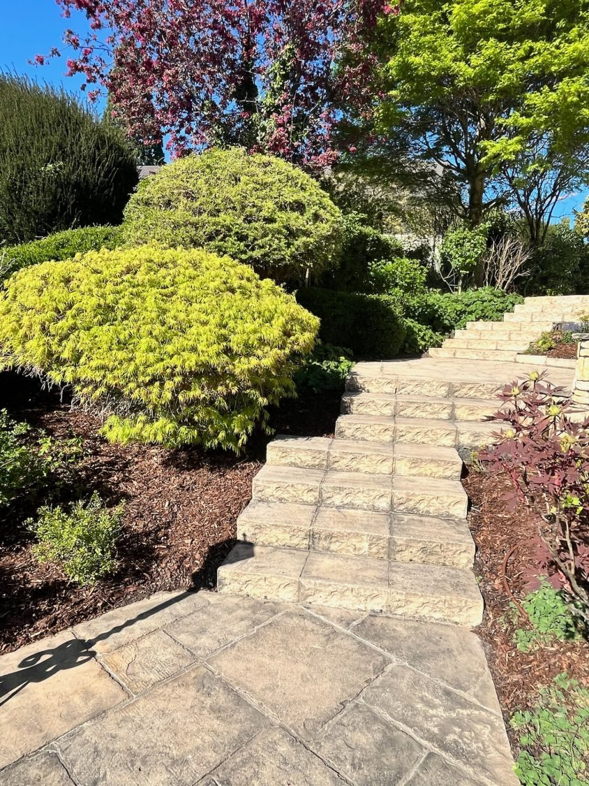
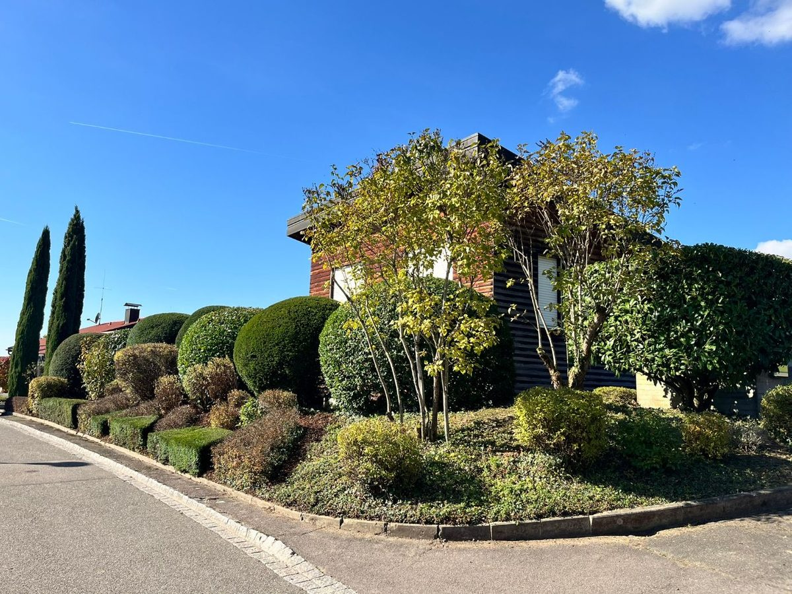
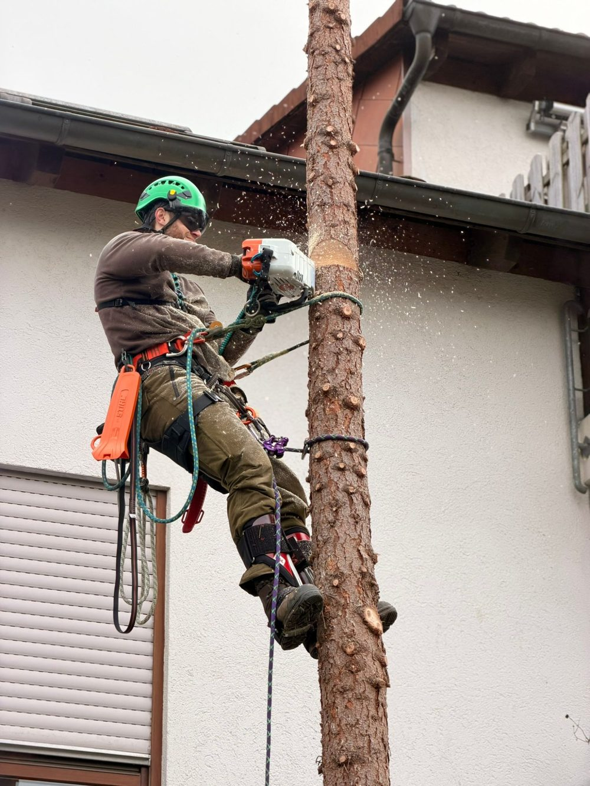
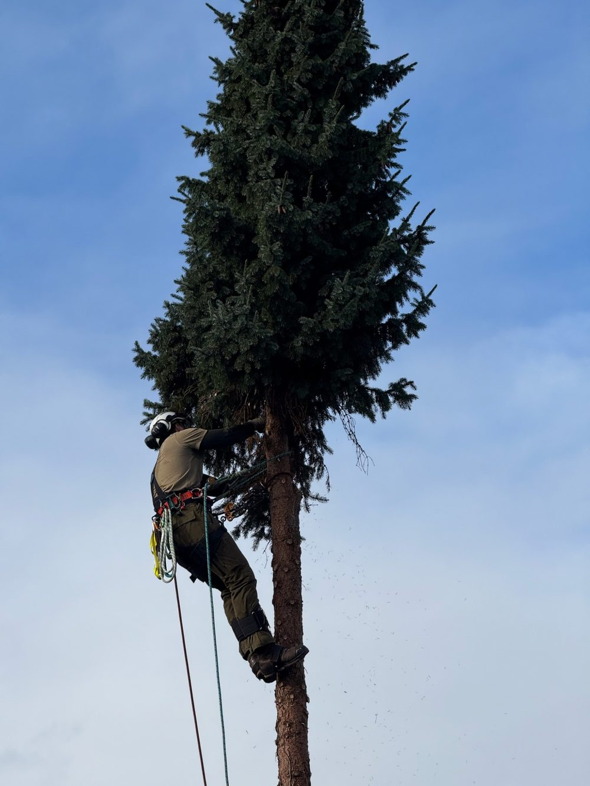
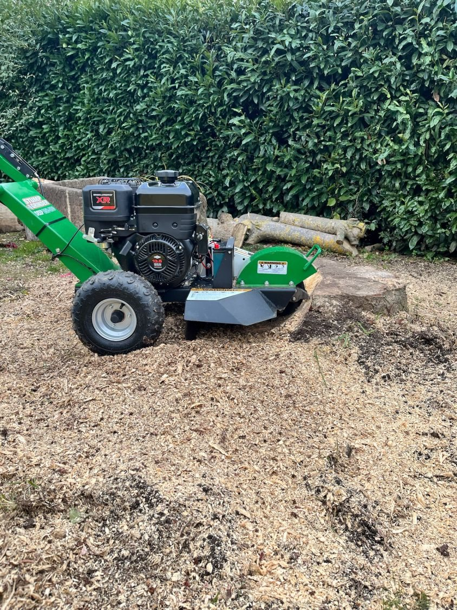
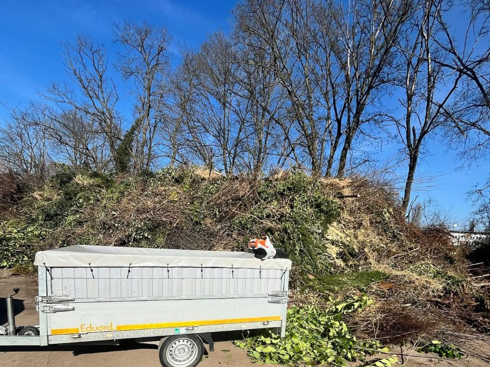
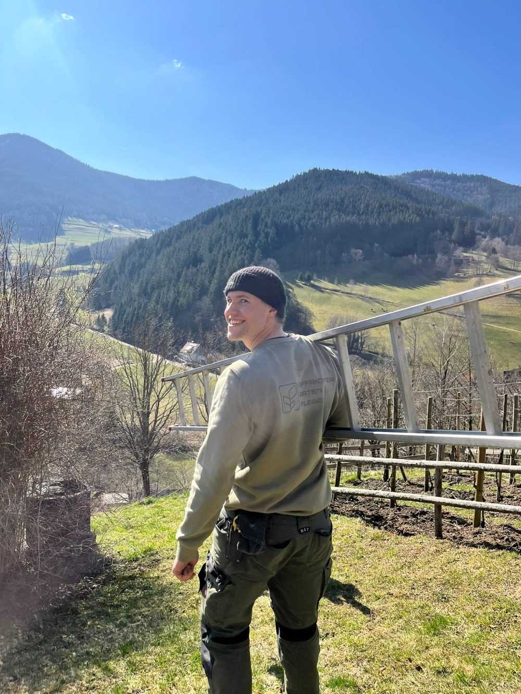

Leistungen
Das bieten wir an
Pflanzschnitt

Beim Pflanzschnitt werden Bäume und Sträucher gezielt geschnitten, damit sie gut anwachsen, gesund wachsen und ihre Form behalten. Wir sagen Ihnen, was Ihre Pflanzen jetzt brauchen, und schneiden sie fachgerecht.
Dazu anfragenHeckenschnitt

Regelmäßiger Schnitt hält Hecken dicht, gesund und in Form. Wir schneiden Hecken jeder Art und Größe und nehmen auf Wunsch das Schnittgut gleich mit.
Dazu anfragenBaumpflege / -Fällungen

Gute Baumpflege erhält die Gesundheit und Standsicherheit Ihrer Bäume, zum Beispiel durch Kronenpflege und das Entfernen von Totholz. Muss ein Baum weichen, fällen wir ihn fachgerecht und sicher.
Dazu anfragenBaumklettern (SKT)

Wir klettern mit Seil und Gurt direkt in den Baum und arbeiten dort in der Krone. So lassen sich Bäume gezielt pflegen und kontrolliert abtragen, auch in engen Gärten, zwischen Gebäuden oder dort, wo keine Maschine hinkommt. Das schont Rasen, Beete und Umgebung.
Dazu anfragenBaumstumpf- und Wurzelfräsen

Wir fräsen Baumstümpfe und Wurzeln fachgerecht aus. Danach kann die Fläche wieder genutzt werden, etwa für Rasen, Beete oder neue Pflanzungen.
Dazu anfragenMäharbeiten

Ob kleine Rasenfläche oder großes Grundstück: Wir mähen regelmäßig oder einmalig, zum Beispiel nach dem Winter oder bei verwilderten Flächen.
Dazu anfragenGrünschnittabholung

Heckenschnitt, Baumschnitt und anderen Grünschnitt nehmen wir mit und entsorgen ihn. So bleibt Ihr Grundstück nach der Arbeit sauber.
Dazu anfragenUnd vieles mehr …

Haben Sie ein anderes Anliegen rund um Baum, Landschaft und Garten? Fragen Sie einfach an. Wir beraten Sie gern und erstellen Ihnen ein unverbindliches Angebot.
Anfrage stellenHaben Sie etwas anderes im Sinn? Fragen Sie uns einfach.
Angebot anfragen